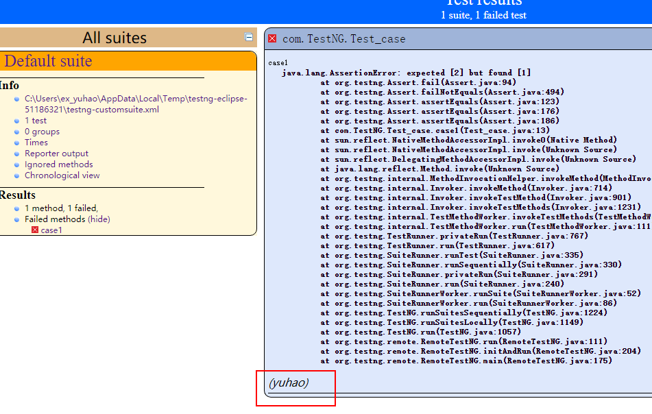

前言
TetsNG提供了很多注解，允许测试人员灵活地组织测试用例
一、@Test
@Tets是TestNG的核心注解，被注解的方法，表示为一个测试方法。
description属性
@Test(description = "yuhao")
public void case1(){
System.out.println("case1方法");
}在测试报告中体现出来

enabled属性
设置为false时，被注解的方法将不会执行
groups属性
对测试方法进行分组，可在类级别或方法级别添加组，类级别分组，表示类里面的所有方法都属于该分组。分组在XML中的调用与普通方法不同，在说XML时会详细介绍。
@Test(groups = "yuhao")
public void case1(){
System.out.println("case1方法");
}dependsOnMethods属性
测试方法case1依赖于case2，case2先于case1执行。如果case2失败了则case1也不执行，这叫硬依赖。
@Test(dependsOnMethods = {"case2"})
public void case1(){
System.out.println("case1方法");
}
@Test
public void case2(){
System.out.println("case1方法");
}dependsOnGroups属性
类似于dependsOnMethods一个用方法名做依赖，一个使用组名做依赖。
invocationCount属性
方法执行次数
@Test(invocationCount = 5)
public void case1(){
System.out.println("case1方法");
}threadPoolSize属性
线程池的内线程的个数
timeOut属性
超时时间-毫秒
alwaysRun属性
在添加依赖关系时，加上alwaysRun=“true”的属性，无论依赖是否成功，此方法都会继续执行。
二、@Before
@BeforeClass，被注解的方法在此类所有测试方法前执行
@BeforeMethod，被注解的方法在每个@Tets方法前执行
@BeforeSuite，被注解的方法在当前Suite中方法执行前执行
@BeforeTest，被注解的方法在每个@Test方法前执行
@BeforeGropu，被注解的方法在指定组内方法执行前执行
三、@After
@AfterClass，被注解的方法在此类所有测试方法后执行
@AfterMethod，被注解的方法在每个@Tets方法后执行
@AfterSuite，被注解的方法在当前Suite中方法执行后执行
@AfterTest，被注解的方法在每个@Test方法后执行
@AfterGropu，被注解的方法在指定组内方法执行后执行
四、@Lgnore
被此方法注解的方法在测试时都将被忽略执行
五、@Listeners
定义一个测试类的监听器，只能添加到测试类上，不能添加的具体方法。
六、@Parameters
此注解用来传递参数，可以传递单个、多个、默认值
传递单个参数
测试用例
@Parameters({ "user" })
@Test
public void testcase1(String user) {
System.out.println(user);
}XML文件
<suite name="Suite" parallel="false">
<parameter name="user" value="yogouo"/>
<test name="autotest">
<classes>
<class name="com.TetsNG.testcase"/>
</classes>
</test>
</suite>传递多个参数
测试用例
@Parameters({ "user","data" })
@Test
public void testcase1(String user,String data) {
System.out.println(user+data);
}XML文件
<suite name="Suite" parallel="false">
<parameter name="user" value="yogouo"/>
<parameter name="data" value="2019-12-09">
<test name="autotest">
<classes>
<class name="com.TetsNG.testcase"/>
</classes>
</test>
</suite>默认值
测试用例
@Parameters({ "user" })
@Test
public void testcase1(@Optional("yogouo") String user) {
System.out.println(user);
}XML文件
<suite name="Suite" parallel="false">
<test name="autotest">
<classes>
<class name="com.TetsNG.testcase"/>
</classes>
</test>
</suite>